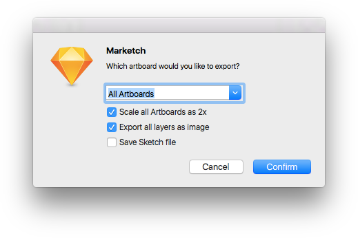
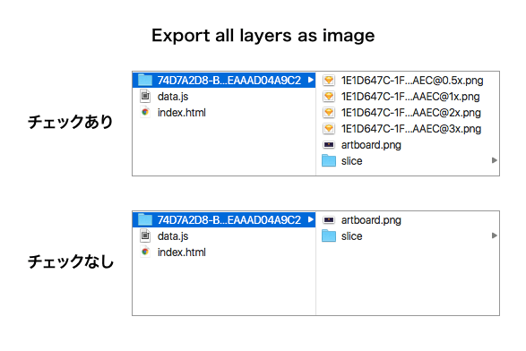
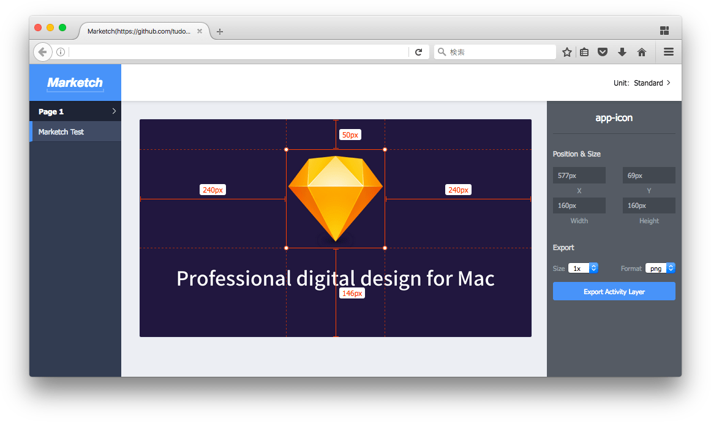
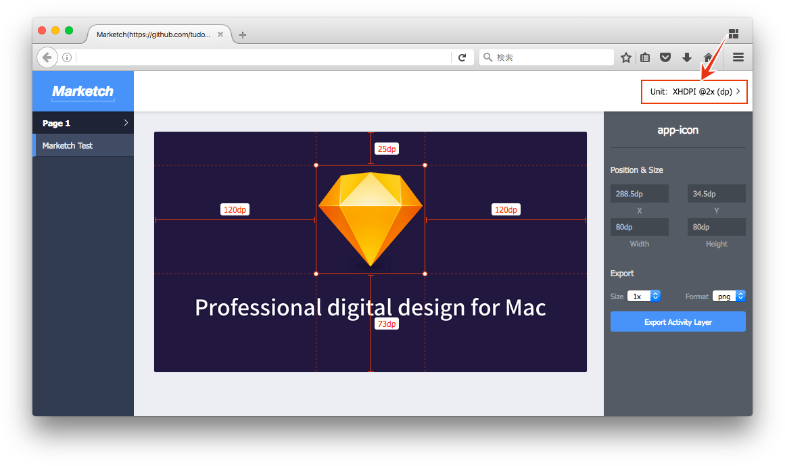

Sketchプラグインを適当に選んで紹介していく、Sketch Plugin Advent Calendar 2016 16日目は、アートボードをHTMLとして書き出し、ブラウザ上でスペックを確認できる「Markechプラグイン」です。
プラグインを実行して表示されるウィンドウで設定を行い［Confirm］ボタンをクリックすると、必要なリソースをZIPファイルに内包して保存されます。プラグインのショートカットはCommand + Shift + Mです。

プルダウンは書き出す対象のアートボードを選択します。選択肢は次の通りです。
- All Artboard: すべてのアートボード
- Selected Artboard(s): 選択しているアートボード
- Artboards On Current Page: 現在のページにあるアートボード
オプションの「Slece all Artboards as 2x」をチェックした場合は、アートボードを@2xとして扱います。
「Export all layers as image」をチェックした場合は、Exportableな設定をされていないレイヤーも画像として書き出します。

「Save Sketch file」にチェックを入れると、ZIP内にSketchファイルを内包します。ただし、ドキュメントを新規で作成している場合は、保存をしておく必要があります。
ZIPファイルに含まれるHTMLをブラウザで開き、オブジェクトをマウスオーバーしたりクリックしたりするとスペックを確認することができます。また「Export all layers as image」のオプションを有効にしておけば、Sketchを使わずに書き出しもできます（画像含めて書き出ししているので当然なんですが）。

右上のUnitで単位を変えることができ、スペックもそれに応じた数値で表示されます。

Sketchを使わずファイルの中身を確認しようと思うと、ZeplinやAvocodeなどのウェブサービスもありますが、アカウントの登録というハードルがあります。MarketchではHTMLとして書き出すため、ブラウザさえ使うことができれば、内容を確認することができます。
もちろん、Sketchがマルチプラットフォーム対応してくれるのがベストですが……
それでは、楽しいSketchライフを。